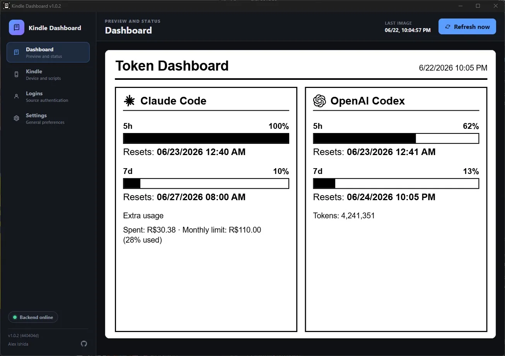

E-readers & e-inkTraditional reuse infrastructureIntermediateE1
Render Home Assistant pages on a server and use an old Kindle only for display.
Check your hardware firstJailbroken Kindles capable of running the screenshot display scripts.
Watch out Needs Home Assistant and a screenshot service. The screen is not running a complete browser application.
Repository not archivedInstall scripts

E-readers & e-inkAI-assisted development/setupAdvancedE2
Turn an old Kindle into a WHOOP health-data display, with documentation for AI-assisted setup.
Check your hardware firstJailbroken Kindles supported by the project configuration.
Watch out AI-assisted setup does not verify that all code was AI-developed. Requires external accounts/APIs.
Repository not archivedInstall scripts
E-readers & e-inkTraditional reuse infrastructureIntermediateE1
Turn an old Kindle into an information display with switchable content.
Check your hardware firstOld Kindles covered by the project tutorial; check model and jailbreak prerequisites individually.
Watch out Do not assume refresh behavior, buttons and networking scripts work across all models.
Repository not archivedInstall scripts

E-readers & e-inkAI-adjacent usesIntermediateE1
Use an old Paperwhite as a desktop information screen displaying AI tool usage.
Check your hardware firstJailbroken Kindle Paperwhite with SSH / FBInk.
Watch out Displaying AI usage does not mean running AI on the device. The project does not handle jailbreaking.
Repository not archivedInstall application and scripts
E-readers & e-inkTraditional reuse infrastructureAdvancedE1
Provide a prerequisite unlock route for installing community software on supported Kindles.
Check your hardware firstKindle model/firmware combinations explicitly supported by the official jailbreak guide.
Watch out This is infrastructure, not a complete information-display or AI conversion.
Repository not archivedPrivilege unlock

E-readers & e-inkTraditional reuse infrastructureAdvancedE1
Provide low-level e-ink drawing tools for information-display projects on old readers.
Check your hardware firstSupported Linux framebuffer / Kindle / Kobo environments.
Watch out A drawing library is not a ready-to-use product. It needs higher-level scripts and device permissions.
Repository not archivedLow-level tool